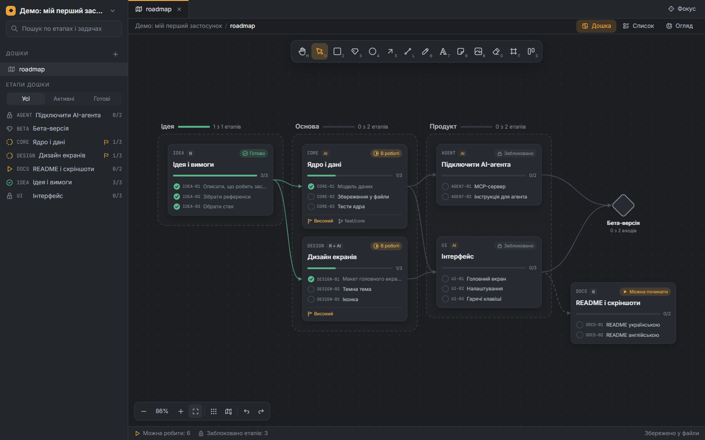
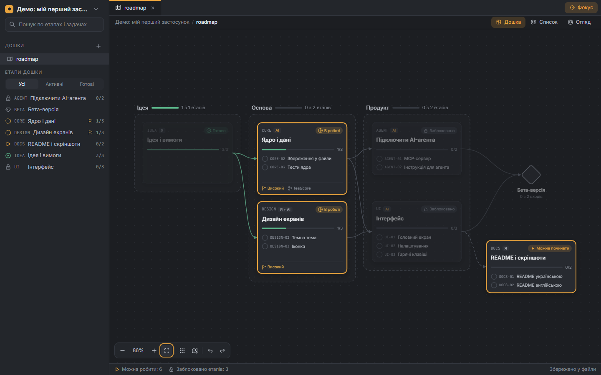
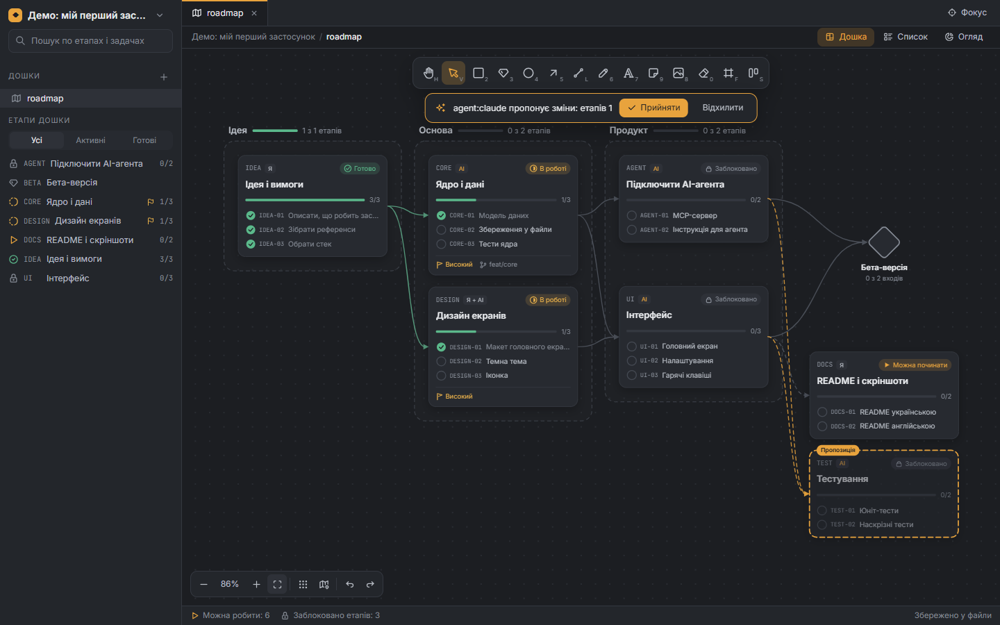
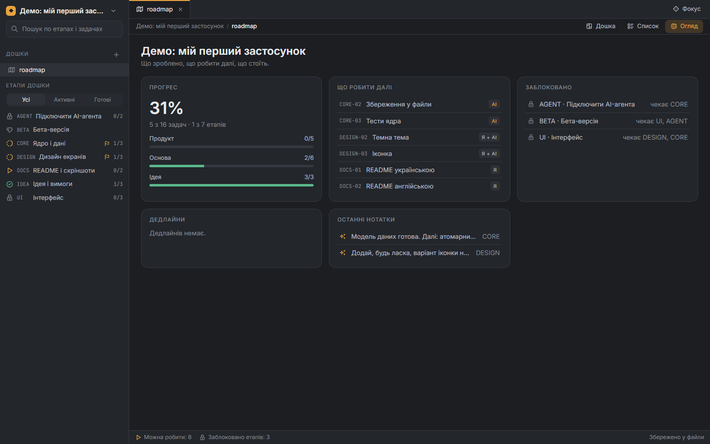

План, який AI-агенти тримають актуальним
Pathloom - локальна дошка й roadmap. Агент будує план через MCP або CLI. Ви бачите, як дошка змінюється наживо, і схвалюєте або відкочуєте зміни.
v0.1.0 pre-release · Windows · macOS · Linux
Від запиту до плану, який видно
Друкує агент. Загальна картина й останнє слово лишаються за вами.
Одна дошка і для картини, і для плану
Малюйте вільно, а потім перетворюйте начерк на етапи зі справжніми залежностями.
Нескінченна дошка, яка знає ваш план
Малюйте так, як думаєте, і ставте справжні картки етапів на те саме полотно.
- Фігури, стрілки, що прилипають до карток, олівець, стікери, зображення й frames.
- Чистий або рукописний стиль, прив'язка до сітки, напрямні, мінікарта.
- Режим «Фокус» ховає завершене й підсвічує те, що можна робити зараз.

Картки етапів зі справжніми залежностями
Кожен етап має задачі з ID на кшталт AUTH-03. Статус обчислюється з графа, його не вписують вручну.
- Можна починати, в роботі, заблоковано чи готово - з залежностей і задач.
- Жорсткі й м'які залежності із захистом від циклів.
- Фази з прогресом, віхи й шаблони планів.
- Авторозкладка тримає дошку охайною після кожної зміни агента.

Агенти пропонують, ви вирішуєте
У режимі рев'ю зміни агента приходять пунктирними картками з diff. Нічого не застосується, поки ви не погодите.
- Схвалюйте або відхиляйте кожну пропозицію, з причиною, яку агент прочитає.
- Скасування будь-якої зміни агента одним кліком.
- Claim наживо показує, який агент працює над якою задачею.
- Протокол для оркестраторів: стан сесії, спільна черга погоджень, потік подій і deep links
pathloom://.

Усе, що чекає на вас, в одному місці
Агенти можуть попросити погодити задачу або обрати між варіантами. Усе збирається в розділі Чекає на мене.
- Відповідайте в застосунку або з Telegram через
pathloom telegram. - За бажанням агентам заборонено закривати задачі: вони надсилають їх на рев'ю.
- Рішення зберігаються, тож агент не питає двічі.
Що робити сьогодні і що на критичному шляху
Огляд, «Сьогодні» і «Тиждень» показують прострочене, термінове й заблоковане, тож ви відкриваєте застосунок і все знаєте.
- Швидке додавання звичайними словами: напишіть «виправити логін у п'ятницю», і це стане задачею.
- Нагадування й щоденний дайджест.
- Timeline з підсвіченим критичним шляхом.

Імпортуйте, експортуйте, скасовуйте будь-що
План ніколи не замкнений у застосунку. Кожну зміну записано, і її можна відкотити.
- Імпорт із Markdown, CSV, Trello або Notion.
- Експорт у HTML-сторінку для читання, Markdown, CSV або GitHub issues.
- Історія змін з відкотом в один клік.
Зроблено для агентів, зрозуміло вам
Кожна дія в застосунку - це також команда. Той самий план доступний через CLI і stdio MCP-сервер.
Працює з
Завантажте Pathloom
Десктопний застосунок для Windows, macOS і Linux. Без акаунта й хмари: усе лишається в папці вашого проєкту.
v0.1.0 pre-release. Це рання версія. Збірки ще не підписані, тож система може попросити підтвердити перший запуск. Усі релізи.